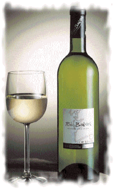

| 
Albariño, variedad
mítica de Galicia que proporciona unos vinos aromáticos y untuosos.
Sus aromas son frutales muy variados. De grano muy pequeño y muy
dulce. Esta uva posee una gran capacidad de producción de azúcares,
que en los buenos años puede alcanzar los 13% vol. de alcohol.
También mantiene una riqueza en ácidos que muy pocas variedades
consiguen en todo el mundo, unida a una riqueza en componentes
aromáticos y sápidos que hace estos vinos muy identificables
El Albariño ha viajado a lo largo y ancho
del mundo y allí donde ha estado siempre ha hablado bien de Galicia.
Su aroma punzante, floral y afrutado ha ido haciéndose hueco en
todos los lugares, hasta llegar a convertirse en un caldo
imprescindible a la hora de hablar de vinos. El vino Albariño es el
heredero de una larga tradición a la que nadie ha sido capaz de
poner fecha de inicio.
La Denominación de Origen "Rías
Baixas" hace referencia y delimita geográficamente la
región en donde se cultiva la mítica uva que da origen al vino
blanco gallego de más prestigio: El Albariño. Cinco comarcas de la
provincia de Pontevedra (el Valle del Salnés, O Rosal, el Condado
del Tea, Soutomaior y el Val do Ulla) son los únicos productores de
estos vinos que, desde 1988, están integrados en la Denominación de
Origen Rías Baixas.
Tiempo atrás fueron personajes de la
talla de Cunqueiro y Castroviejo los que apadrinaron, comenzando por
reuniones de amigos amantes de la mesa gallega, la fama de estos
vinos blancos. Hoy en día los vinos Albariños viajan más allá de
nuestras fronteras de la mano de las grandes bodegas que colocan sus
producciones en mercados internacionales, obteniendo así un
reconocimiento de sobra merecido. Pero es también de recibo
reconocer que parte de esa fama se debe al trabajo realizado por los
pequeños y medianos bodegueros. Estos productores elaboran un Vino
de Autor que basa su principal reclamo en la calidad y la
elaboración mimada desde que se planta la cepa hasta que se recoge
la uva y se introduce seleccionada en la bodega. La producción de
estas bodegas, minoritaria por razones de capacidad, es la
complementación perfecta a la cocina gallega ennoblecida, que
necesita del toque personal de los vinos que se elaboran a partir de
la sabiduría que cada generación deja como herencia a sus sucesores.
Con todo ello, hay que reconocer que Galicia sabe sacar el máximo
rendimiento a los frutos de su tierra. Muestra de ello es que el
Albariño ha sido reconocido en muchos lugares como el "Vino
Universal".
|